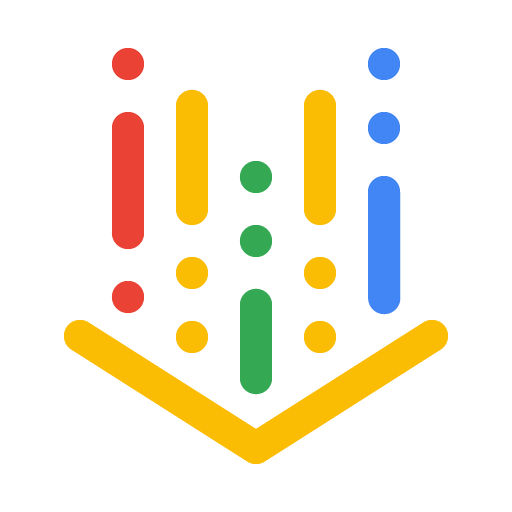
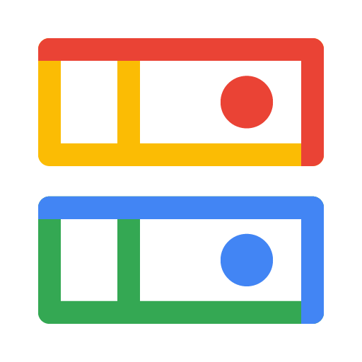

One Live mouth on Cloud Run. Firebase holds memory. AI Logic is text only. Studio tools stay offline.


Logos: official Google Cloud product icons + Icons8 color set. Higgsfield / Gamma / Firecrawl stay in the studio layer — search, parse, and scrape feed Firestore materials, not the 15-minute mouth.